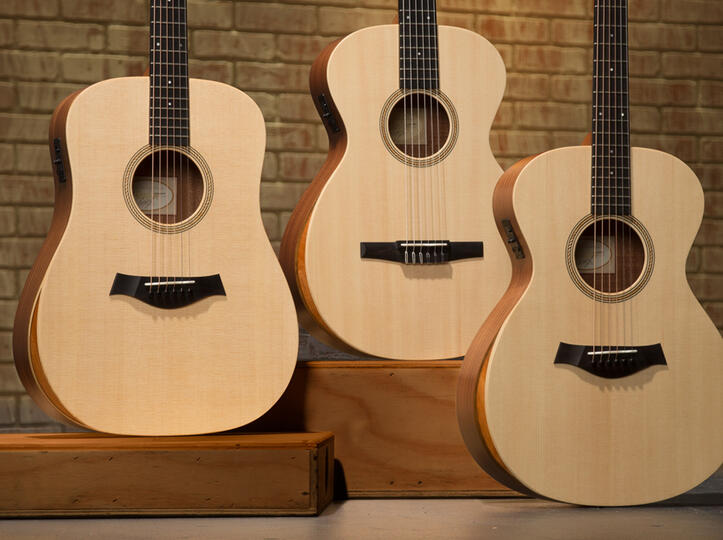

Indiferent de vârstă pe care o ai, nu există un sentiment mai satisfăcător decât a învăţa
să cânţi la un instrument. În timp ce multe persoane încearcă să desluşească tainele chitarei,
din păcate, se întâmplă frecvent ca un număr mare să renunţe după doar câteva luni.
Sperăm că tu vei parcurge acest drum până la capăt.
